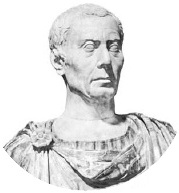

Jül Sezar (MÖ100-44), MÖ I. yüzyılda şimdiki Fransa, Belçika ve Batı Almanya’yı işgal ederek şöhreti yakalayan Romalı bir generaldi. Pompey tarafından idare edilen Roma Senatosu’nu büyüyen popülaritesiyle tehdit etmeye başlayınca, Sezar’a ordusunu dağıtması emredildi. Sezar bunu reddetti. Birlikleriyle Rubicon Irmağı’nı geçerek Capitol’e yürüdü ve artık geri dönemeyeceği bu kader anından sonra bir iç savaş başladı. Düşmanlarını Avrupa üzerinden Pompey’in öldürüldüğü Mısır’a dek kovaladı. Mısır’dan ayrılmadan önce Sezar, Kleopatra’ya âşık olarak onu kraliçe ilan etti. Roma’ya döndüğünde de toprakları bir diktatör gibi yönetti. Sezar, en iyi arkadaşı Brutus’un da karıştığı bir komployla MÖ 44 yılında Roma takvimine göre 15 Mart’ta öldürüldü.

Sezar’la ilgili sayısız efsane bulunmaktadır. Daha yirmili yaşlarındayken Doğu Akdeniz’de korsanlar tarafından esir alınmıştır. Adamları tarafından fidye karşılığında kurtarıldıktan sonra, yerli liderlerden küçük bir ordu toplamış, korsanların yerini saptamış ve hepsini çarmıha gererek öldürmüştür.
Sezar yıllar sonra, MÖ 62’de, Roma’daki siyasi basamakları tek tek tırmanırken bir skandal patlak verdi. Publius Clodius isimli bir soylunun, erkeklerin katılmasının yasak olduğu dini bir ritüelde bulunduğu ortaya çıktı. Ritüel Sezar’ın evinde yapılmıştı ve sonradan, Clodius’un Sezar’ın eşi Pompeia’yla aşk yaşadığı için orada bulunduğu dedikoduları etrafa yayıldı. Sezar, dedikoduların doğru olmadığını biliyor ve böyle de söylüyordu. Ancak hiçbir şeyin Sezar’ın karısı ve ailesini şüphe altında bırakmaması gerektiği gerekçesiyle karısını boşadı.
Sezar, Pompey’e karşı yürüttüğü iç savaşın tam ortasında Senato tarafından diktatör ilan edildi. Bu bir kriz dönemiydi ve liderin olağanüstü hallerde belirleyici kararlar verebilmesi gerektiği düşünülüyordu. Fakat olağanüstü hal hiç bitmedi, cumhuriyet yeniden kurulamadı.
Sezar ülkeyi bir diktatör olarak yönetti ama (artık kendi taraftarlarını doldurduğu) Senato’ya danışıyor ve cumhuriyetin geleneklerine saygı gösteriyormuş gibi görünmeye çoğunlukla dikkat etti. Ancak yaşamının son yıllarında tedbiri elden bırakarak Asyalı tebaasının kendine bir tanrı gibi tapınmasına izin verdi ve paralara resmini bastırdı. Henüz hayatta olan bir Romalı ilk kez bu kadar onurlandırılıyordu. Resmini taşıyan paraların üzerinde “Ölümsüz Diktatör” yazıyordu. Bu gereksiz yüceltmelerin, Sezar’ın iktidardan düşürülerek öldürülmesiyle sonuçlanan kini alevlendirdiği düşünülüyor.
EK BİLGİ:
1. Asya’ya düzenlediği başarılı bir askeri seferden sonra Sezar ünlü sözünü söylemiştir: “Veni, vidi, vici” (Geldim, gördüm, yendim.)